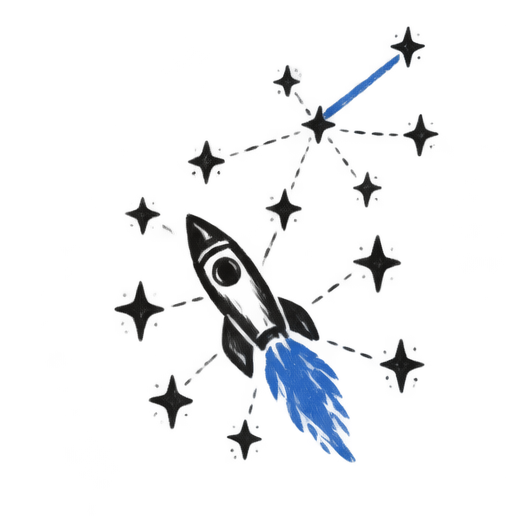
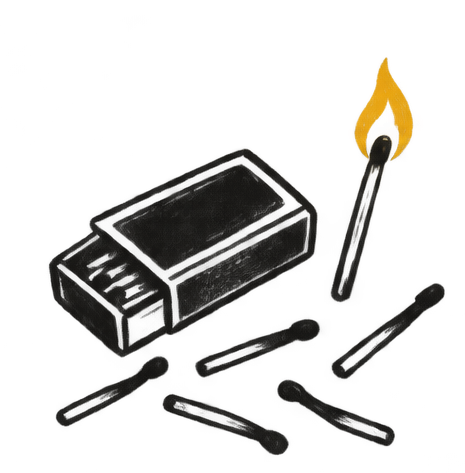
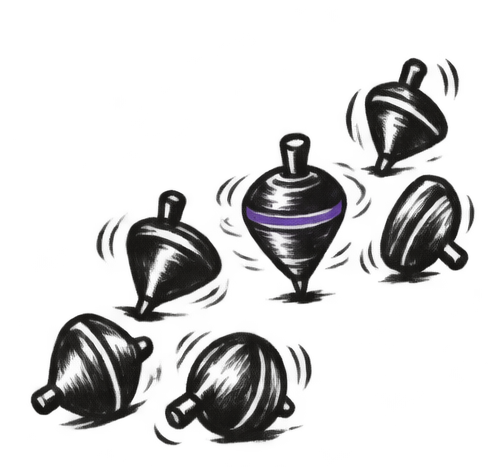
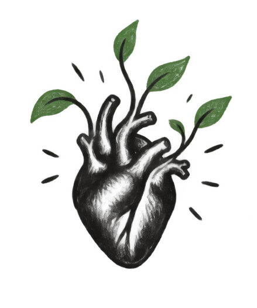
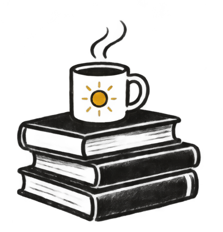
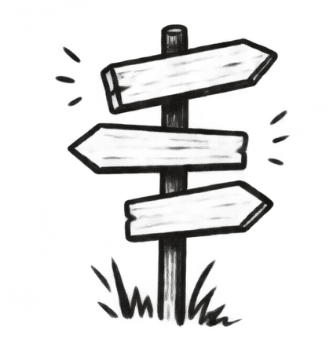
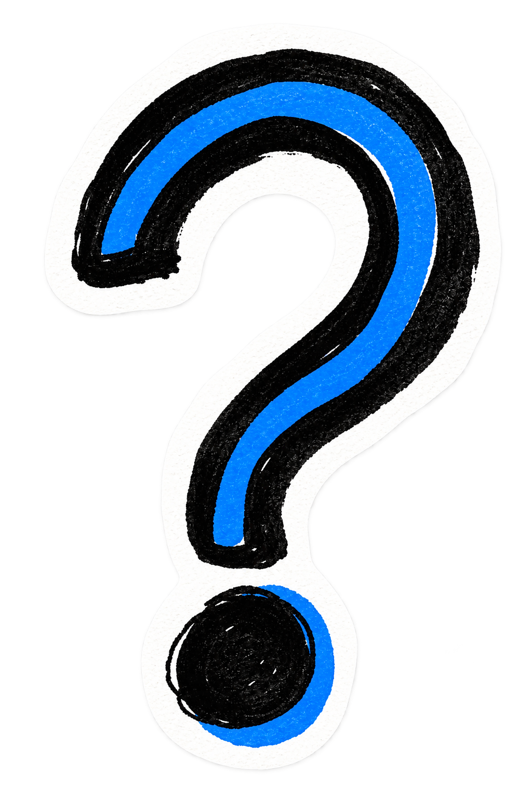
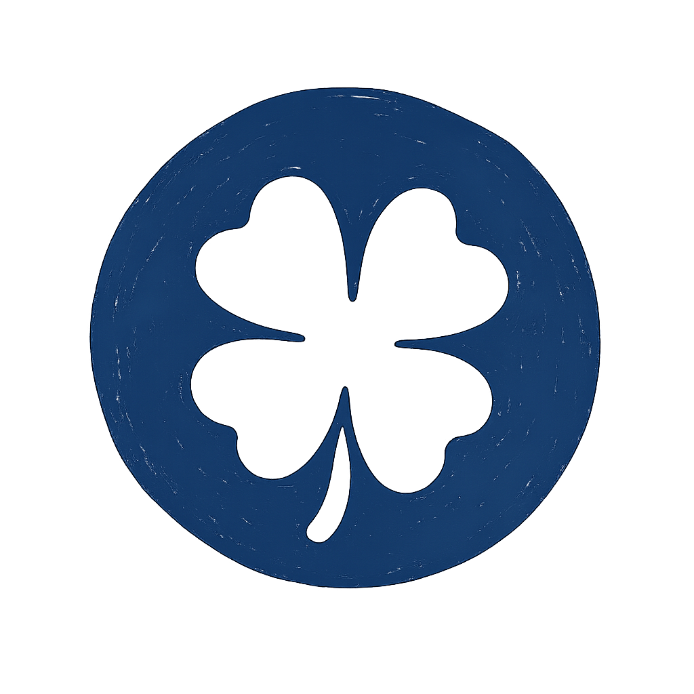

Ya disponible en iOS
Una pregunta al día para no vivir en piloto automático.
No es terapia. No es productividad. Es un momento de pausa, cada día, para pensar con intención.
Reflexión
Tu espacio privado
+
Acción
Pulsos, fuera de la app
Una pregunta al día
La misma para todos, para pensar juntos aunque cada uno responda por su cuenta. Solo disponible 24 horas.
Ciclos temáticos
Las preguntas se organizan en ciclos de unas semanas, cada uno con su propio tema y su propio ritmo.
Pulsos opcionales
Pequeñas acciones para salir de la inercia, si te apetece llevar la reflexión un paso más allá.